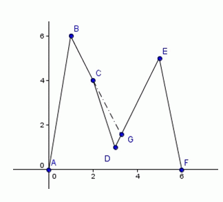

第一行一个整数n，表示山脉顶点个数。
接下来n行，第i行两个整数xi,yi，表示第i个顶点的坐标。
保证xi严格递增，yi互不相同（y1,yn除外），xi,yi都为非负整数。保证y1,yn的值为0。
我们定义山脉的内部为顶点之间的折线与x轴的所夹部分（不包括顶点之间的折线）。如果顶点A与顶点B之间的连线段没有穿过山脉的内部，则我们称顶点A能看见顶点B（或B能看见A）。
现在pty从某个顶点出发，想要登到山脉的顶峰（最高点），他只能在顶点之间的折线上行走。经过思考，他将采取如下的一种登山方式：
1、站在出发点，向左右看去，如果此时能够看到的最高山峰在左侧，则向左侧走去，否则向右侧走去。
2、在行走的同时，pty仍然观察着此时左右的最高山峰，一旦发现一座比之前看到的都要高的山峰，他将向此时的最高峰走去。
3、如果存在某个时刻，pty所站立的位置比左右能看到的最高峰都要高，则他到达了山脉的顶峰，此时他的爬山过程结束。
pty想知道，采取如上的策略，从每个顶点出发，到达最高点的路程分别是多少？（平面中两点的距离等于它们之间连线段的长度）
第一行一个整数n，表示山脉顶点个数。
接下来n行，第i行两个整数xi,yi，表示第i个顶点的坐标。
保证xi严格递增，yi互不相同（y1,yn除外），xi,yi都为非负整数。保证y1,yn的值为0。
输出共n行：每行一个实数
第i行的实数表示从第i个顶点出发，到达最高点的路程。
如果输出与标准输出的误差不超过$1e-2$，则该测试点得满分，否则得0分。
6
0 0
1 6
2 4
3 1
5 5
6 0
6.08
0.00
2.24
6.52
9.87
14.97
【数据规模与约定】
所有的数据满足xi,yi<=100000。
1-4的测试点 满足n<=20。
5-8的测试点，满足n<=70。
9-10的测试点，满足n<=100000且每个顶点都能直接看到最高点。
11-14的测试点，满足n<=30000。
15-20的测试点，满足n<=100000。

路线说明：
A点出发：A->B
B点出发：B
C点出发：C->B
D点出发：D->G->D->C->B
E点出发：E->D->C->B
F点出发：F->E->D->C->B
从D点出发时，看到的最高点是E，当步行至G点时，发现更高点B，转向后一直步行向B点。从其它点出发后都不需要转向。